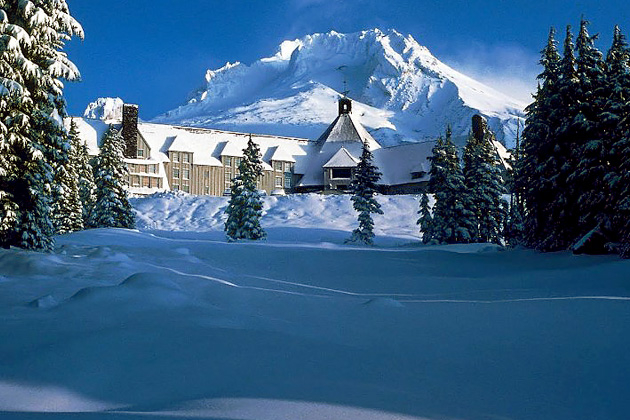

The Shining
Main Content

Stanley Kubrick’s very free adaptation of the Stephen King novel sees blocked writer Jack Torrance (Jack Nicholson) going barmy in a creepy snowbound hotel.
Although the film was shot almost entirely in the studio at Elstree Studios in Hertfordshire, England, where the hotel interior was constructed, the exterior of the ‘Overlook Hotel’ is the Timberline Lodge, Mount Hood in the Hood River area of Northern Oregon.
Built during the Depression, it’s 45 miles east of Portland, just east of Zig Zag on Route 26. There is no maze at the Timberline – this was built at the old MGM Borehamwood Studios, also in Hertfordshire.
The interior sets were partly based, not on the Timberline, but on the Ahwahnee Hotel, in Yosemite National Park, California.
To complicate matters further, it’s sometimes claimed that the film was made at the Stanley Hotel, 333 East Wonderview Avenue, Estes Park in Colorado. This is the hotel in which King stayed in 1973, and which inspired the original story.
The writer detested the Kubrick adaptation, which junked most of his plot in favour of atmosphere, and sanctioned a TV movie remake, which did indeed use the Stanley. The hotel was also seen on-screen in Peter Farrelly’s 1994 Dumb and Dumber.
The opening helicopter shots, of Torrance driving to the Overlook, were filmed by a second unit on Going-to-the-Sun Road, running along the western shore of Saint Mary Lake in Glacier National Park, northeast of Kalispell, Montana. Some of this footage was tacked on to the original release of Ridley Scott’s Blade Runner to provide the ‘happy ending’. Going-To-The-Sun Road appears again (very briefly) during the cross-country run in Forrest Gump.
Visit Info
Visit The Film Locations
Oregon
Visit: Oregon
Stay at: the Timberline Lodge, 27500 West Leg Road, Timberline Lodge, OR 97028 (tel: 503.272.3311)
Montana
Visit: Montana
Visit: Glacier National Park, Montana 59936 (tel: 406.888.7800)
California
Visit: California
Visit: Yosemite National Park (tel: 209.372.0200)
Stay at: the Ahwahnee Hotel, 1 Ahwahnee Drive, Yosemite National Park, CA 95389 (tel: 888.413.8869)
Colorado
Visit: Colorado
Stay at: the Stanley Hotel, 333 West Wonder View Avenue, Estes Park, CO 80517 (tel: 970.577.4000)